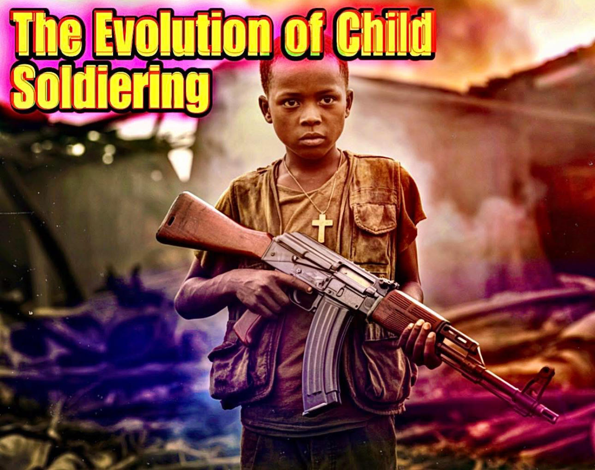

•𝐓𝐫𝐚𝐮𝐦𝐚 𝐚𝐧𝐝 𝐌𝐞𝐧𝐭𝐚𝐥 𝐇𝐞𝐚𝐥𝐭𝐡 𝐎𝐮𝐭𝐜𝐨𝐦𝐞𝐬 𝐀𝐦𝐨𝐧𝐠 𝐂𝐡𝐢𝐥𝐝 𝐒𝐨𝐥𝐝𝐢𝐞𝐫𝐬 𝐚𝐧𝐝 𝐂𝐨𝐧𝐟𝐥𝐢𝐜𝐭-𝐀𝐟𝐟𝐞𝐜𝐭𝐞𝐝 𝐘𝐨𝐮𝐭𝐡• The term “child soldier” encompasses not only children directly participating in combat, but also minors forced into auxiliary military functions, including intelligence gathering, logistical support, sexual slavery, forced marriage, transportation, labor, and ideological propaganda dissemination. We increasingly recognizes that the psychiatric burden experienced by conflict-affected youth extends far beyond battlefield participation alone. Entire developmental trajectories may become distorted by chronic exposure to violence, displacement, bereavement, coercion, starvation, torture, moral injury, and institutional collapse. The mental health outcomes associated with child soldiering are not reducible to simplistic psychiatric categorizations. Rather, they emerge through a convergence of neurobiological disruption, social fragmentation, moral trauma, developmental deprivation, identity destabilization, and prolonged insecurity. Prolonged exposure to armed conflict during critical developmental periods profoundly alters emotional regulation systems, attachment mechanisms, executive functioning, stress hormone regulation, and interpersonal trust structures. These changes frequently persist into adulthood, influencing educational attainment, occupational stability, parenting behaviors, criminality risk, social cohesion, and post-conflict national reconstruction capacity. Cutrently there exist alarming rates of trauma-related pathology among youth populations in conflict zones including the Democratic Republic of the Congo, Sudan, Gaza, Myanmar, Syria, Haiti, Ukraine, Somalia, Yemen, Burkina Faso, South Sudan, and parts of the Sahel region. However, increasing caution has emerged regarding over-pathologization. Not every conflict-affected child develops post-traumatic stress disorder, and many display remarkable adaptive resilience under extraordinary conditions. Consequently, contemporary doctoral-level analysis requires a nuanced framework capable of recognizing severe psychopathology while also acknowledging cultural variation, resilience factors, social reintegration dynamics, and the limitations of Western psychiatric models when applied globally. 𝗗𝗲𝗳𝗶𝗻𝗶𝗻𝗴 𝗧𝗿𝗮𝘂𝗺𝗮 𝗶𝗻 𝘁𝗵𝗲 𝗖𝗼𝗻𝘁𝗲𝘅𝘁 𝗼𝗳 𝗖𝗵𝗶𝗹𝗱 𝗦𝗼𝗹𝗱𝗶𝗲𝗿𝗶𝗻𝗴 Trauma, within humanitarian psychiatry and developmental neuropsychology, refers not simply to exposure to distressing events, but to experiences that overwhelm an individual’s adaptive coping capacity and disrupt neurological, emotional, relational, or existential stability. Child soldiers are uniquely vulnerable because traumatic exposures occur during periods of ongoing cognitive, emotional, and neurobiological development. Conflict-related trauma among children may include: • Witnessing executions • Participating in killings under coercion • Exposure to torture • Sexual violence and rape • Forced cannibalism in extremist militia indoctrination rituals • Destruction of villages and family systems • Chronic starvation and dehydration • Drugging and chemical dependency induction • Forced separation from caregivers • Exposure to mutilated bodies • Repeated displacement • Recruitment through abduction • Exposure to aerial bombardment and artillery • Religious or ethnic persecution • Ideological indoctrination • Forced participation in atrocities against one’s own community Unlike acute single-event trauma, child soldiers often experience what is classified as complex trauma or developmental trauma disorder. Complex trauma involves repeated, prolonged, interpersonal traumatic exposure occurring under conditions where escape is impossible or severely restricted. This distinction is critically important because prolonged trauma alters personality development, attachment systems, identity formation, and emotional regulation in ways qualitatively different from isolated traumatic events. Researchers increasingly argue that child soldier trauma cannot be adequately conceptualized solely through conventional PTSD frameworks. Rather, it often constitutes a multilayered disruption of developmental architecture itself. 𝗡𝗲𝘂𝗿𝗼𝗯𝗶𝗼𝗹𝗼𝗴𝗶𝗰𝗮𝗹 𝗖𝗼𝗻𝘀𝗲𝗾𝘂𝗲𝗻𝗰𝗲𝘀 𝗼𝗳 𝗖𝗵𝗿𝗼𝗻𝗶𝗰 𝗖𝗼𝗻𝗳𝗹𝗶𝗰𝘁 𝗘𝘅𝗽𝗼𝘀𝘂𝗿𝗲 Advanced neuroimaging and psychobiological studies conducted over the past two decades reveal that severe childhood trauma substantially alters brain structure and neurochemical regulation. Key affected regions include: 1. Amygdala Hyperactivation The amygdala functions centrally in fear processing and threat detection. Chronically traumatized youth often develop amygdala hyperreactivity, resulting in: • Hypervigilance • Exaggerated startle responses • Persistent anxiety • Threat overperception • Emotional dysregulation • Sleep disturbance In combat zones, heightened vigilance initially serves an adaptive survival function. However, once conflict exposure ceases, these neuroadaptive mechanisms frequently become maladaptive, impairing reintegration into civilian environments. 2. Hippocampal Dysfunction The hippocampus contributes to memory consolidation and contextual processing. Chronic cortisol elevation associated with prolonged stress may impair hippocampal development, contributing to: • Fragmented traumatic memories • Dissociation • Concentration difficulties • Learning impairment • Disorganized autobiographical memory Educational reintegration becomes profoundly difficult when memory encoding and executive functioning are compromised. 3. Prefrontal Cortex Impairment The prefrontal cortex governs executive function, impulse control, moral reasoning, planning, and emotional regulation. Trauma-induced dysregulation may contribute to: • Aggression • Risk-taking behaviors • Impulse dyscontrol • Reduced emotional inhibition • Difficulty assessing long-term consequences This has direct implications for post-conflict criminal justice systems, rehabilitation strategies, and recidivism risk among demobilized youth. 4. HPA Axis Dysregulation The hypothalamic-pituitary-adrenal axis regulates stress responses through cortisol secretion. Chronic activation during wartime can produce: • Chronic inflammation • Sleep disorders • Anxiety disorders • Immunological dysfunction • Cardiovascular abnormalities • Increased susceptibility to metabolic disease Emerging research increasingly demonstrates that severe childhood trauma produces whole-body physiological consequences extending well beyond psychiatric symptomatology. 𝗠𝗮𝗷𝗼𝗿 𝗣𝘀𝘆𝗰𝗵𝗶𝗮𝘁𝗿𝗶𝗰 𝗢𝘂𝘁𝗰𝗼𝗺𝗲𝘀 A. Post-Traumatic Stress Disorder (PTSD) PTSD remains among the most documented psychiatric outcomes in former child soldiers. Symptoms commonly include: • Intrusive recollections • Nightmares • Flashbacks • Emotional numbing • Hypervigilance • Avoidance behaviors • Dissociation • Irritability and aggression However, prevalence estimates vary dramatically between studies due to differing methodologies, cultural diagnostic variations, and environmental conditions. Importantly, PTSD among former child soldiers often coexists with guilt, shame, moral injury, and identity disruption. Children forced to commit atrocities against civilians or family members may develop profound self-condemnation and existential fragmentation. B. Complex PTSD The World Health Organization’s ICD-11 increasingly recognizes Complex PTSD as particularly relevant for prolonged captivity and coercive control situations. Complex PTSD includes core PTSD symptoms alongside: • Emotional dysregulation • Persistent shame • Distorted self-concept • Relationship instability • Chronic distrust • Emotional detachment This often better captures the lived experiences of conflict-affected youth than traditional PTSD models. C. Depression Major depressive disorder remains widespread among war-affected children and adolescents. Common manifestations include: • Hopelessness • Anhedonia • Social withdrawal • Sleep abnormalities • Appetite disturbances • Suicidal ideation • Survivor guilt Depression rates often increase during post-conflict periods rather than active warfare because delayed psychological processing emerges once survival pressures temporarily diminish. D. Anxiety Disorders Persistent insecurity, displacement, and instability frequently produce generalized anxiety disorders, panic disorders, and severe anticipatory fear states. Children raised in chronically violent environments may internalize assumptions that danger is permanent and unavoidable. E. Dissociative Disorders Dissociation functions as a psychological survival mechanism during overwhelming trauma. Symptoms may include: • Emotional detachment • Depersonalization • Memory fragmentation • Identity disruption • Altered states of consciousness Severe dissociation can significantly impair social functioning and educational recovery. F. Substance Abuse Many armed groups deliberately introduce narcotics, stimulants, alcohol, or psychoactive substances to child recruits in order to increase compliance, suppress fear, or induce dependency. Long-term consequences include: • Addiction • Neurocognitive impairment • Increased violence risk • Social instability • Chronic psychiatric comorbidity 𝗠𝗼𝗿𝗮𝗹 𝗜𝗻𝗷𝘂𝗿𝘆 𝗮𝗻𝗱 𝗘𝘅𝗶𝘀𝘁𝗲𝗻𝘁𝗶𝗮𝗹 𝗧𝗿𝗮𝘂𝗺𝗮 Recent humanitarian scholarship increasingly emphasizes moral injury as distinct from conventional PTSD. Moral injury occurs when individuals perpetrate, witness, or fail to prevent acts that violate deeply held ethical beliefs. Child soldiers frequently experience: • Intense guilt • Spiritual crisis • Self-hatred • Fear of social rejection • Loss of meaning • Existential despair A child forced to kill a family member, burn a village, or participate in torture may later experience profound internal fragmentation extending beyond fear-based trauma. Moral injury may be particularly severe in societies where communal identity, ancestral continuity, and spiritual obligations are culturally central. Importantly, Western psychiatric frameworks sometimes inadequately address spiritual or moral dimensions of trauma, necessitating culturally informed interdisciplinary interventions involving religious leaders, elders, traditional healers, and community reconciliation structures. 𝗚𝗲𝗻𝗱𝗲𝗿-𝗦𝗽𝗲𝗰𝗶𝗳𝗶𝗰 𝗠𝗲𝗻𝘁𝗮𝗹 𝗛𝗲𝗮𝗹𝘁𝗵 𝗢𝘂𝘁𝗰𝗼𝗺𝗲𝘀 Female child soldiers frequently experience distinct trauma profiles compared to males. Girls may endure: • Sexual slavery • Forced pregnancy • Repeated rape • Forced marriage • Reproductive injury • STI exposure • Maternal trauma during adolescence Psychological outcomes may include: • Severe shame • Community rejection • Maternal attachment difficulties • Postpartum depression • Social ostracization Children born from wartime rape may themselves experience stigmatization, identity crises, and intergenerational trauma transmission. Male child soldiers, meanwhile, may experience severe pressure toward hypermasculinity, emotional suppression, and violence normalization. Contemporary scholarship increasingly rejects simplistic gender binaries in trauma analysis, recognizing substantial overlap while also acknowledging biologically and socially differentiated experiences. 𝗗𝗲𝘃𝗲𝗹𝗼𝗽𝗺𝗲𝗻𝘁𝗮𝗹 𝗖𝗼𝗻𝘀𝗲𝗾𝘂𝗲𝗻𝗰𝗲𝘀 Trauma exposure during childhood alters developmental milestones across multiple domains. 1. Educational Disruption Armed conflict frequently destroys educational infrastructure and interrupts literacy acquisition. Long-term outcomes may include: • Reduced educational attainment • Lower employment opportunities • Economic marginalization • Increased exploitation vulnerability 2. Attachment Disorders Children separated from caregivers or raised within coercive militant systems may develop severe attachment disturbances. Symptoms can include: • Emotional detachment • Reactive aggression • Fear of intimacy • Inability to trust caregivers 3. Identity Fragmentation Adolescence represents a critical period for identity formation. Militant indoctrination often replaces normal developmental processes with militarized identities. Former child soldiers may later struggle with: • Civilian identity reconstruction • Role confusion • Loss of belonging • Social alienation 𝗦𝗼𝗰𝗶𝗮𝗹 𝗮𝗻𝗱 𝗖𝗼𝗺𝗺𝘂𝗻𝗶𝘁𝘆 𝗖𝗼𝗻𝘀𝗲𝗾𝘂𝗲𝗻𝗰𝗲𝘀 Trauma is not solely individual. Entire communities may become psychologically destabilized through prolonged armed conflict. A. Collective Trauma Communities exposed to massacres, displacement, and destruction often develop collective grief structures characterized by: • Chronic fear • Distrust • Social fragmentation • Interethnic hostility • Revenge narratives B. Stigmatization Former child soldiers frequently encounter community rejection due to fear, resentment, or association with atrocities. This rejection may worsen psychiatric outcomes and increase recidivism risk into armed groups. C. Intergenerational Transmission Trauma may transmit biologically, psychologically, and socially across generations through: • Parenting dysfunction • Epigenetic stress alterations • Violence normalization • Economic instability 𝗖𝘂𝗹𝘁𝘂𝗿𝗮𝗹 𝗗𝗶𝗺𝗲𝗻𝘀𝗶𝗼𝗻𝘀 𝗼𝗳 𝗧𝗿𝗮𝘂𝗺𝗮 𝗜𝗻𝘁𝗲𝗿𝗽𝗿𝗲𝘁𝗮𝘁𝗶𝗼𝗻 One of the most important contemporary debates concerns the globalization of Western psychiatric models. Critics argue that imposing exclusively Western trauma frameworks may: • Pathologize culturally normative grief responses • Ignore indigenous healing systems • Undermine local resilience mechanisms • Overmedicalize suffering For example, some cultures conceptualize trauma primarily through: • Spiritual imbalance • Ancestral disruption • Communal disharmony • Social dislocation Consequently, effective interventions increasingly integrate: • Community prayer • Christian reconciliation • Traditional healing practices • Family reintegration ceremonies Humanitarian psychiatry now increasingly emphasizes culturally adaptive trauma models rather than universalized diagnostic assumptions. 𝗥𝗲𝘀𝗶𝗹𝗶𝗲𝗻𝗰𝗲 𝗮𝗻𝗱 𝗣𝗿𝗼𝘁𝗲𝗰𝘁𝗶𝘃𝗲 𝗙𝗮𝗰𝘁𝗼𝗿𝘀 Not all conflict-affected youth develop severe psychopathology. Resilience research identifies several protective factors associated with improved outcomes. These include: • Stable caregiving relationships • Educational access • Community acceptance • Religious or spiritual meaning systems • Peer support networks • Economic stability • Trauma-informed rehabilitation programs Resilience does not imply absence of suffering. Rather, it reflects adaptive functioning despite severe adversity. Increasingly, many caution against portraying former child soldiers solely as passive victims. Many demonstrate extraordinary agency, adaptability, and survival intelligence under catastrophic conditions. 𝗥𝗲𝗵𝗮𝗯𝗶𝗹𝗶𝘁𝗮𝘁𝗶𝗼𝗻 𝗮𝗻𝗱 𝗥𝗲𝗶𝗻𝘁𝗲𝗴𝗿𝗮𝘁𝗶𝗼𝗻 𝗦𝘁𝗿𝗮𝘁𝗲𝗴𝗶𝗲𝘀 A. DDR Programs Disarmament, Demobilization, and Reintegration programs constitute major post-conflict interventions. Effective programs often include: • Trauma counseling • Educational restoration • Vocational training • Family tracing • Community mediation • Substance abuse treatment However, many DDR programs remain severely underfunded and inconsistently implemented. B. Trauma-Informed Care Trauma-informed humanitarian approaches emphasize: • Psychological safety • Predictability • Empowerment • Non-coercive engagement This represents a major shift away from punitive or purely security-oriented frameworks. C. Community-Based Interventions Evidence increasingly supports community-centered rehabilitation over exclusively individualized psychiatric treatment. Successful approaches may include: • Church reconciliation • Collective storytelling • Youth mentorship • Community rebuilding projects D. Educational Rehabilitation Restoring educational trajectories is among the strongest predictors of long-term recovery. Education provides: • Cognitive stimulation • Social structure • Identity reconstruction • Economic opportunity 𝗘𝗺𝗲𝗿𝗴𝗶𝗻𝗴 𝗔𝗿𝗲𝗮𝘀 𝗼𝗳 𝗥𝗲𝘀𝗲𝗮𝗿𝗰𝗵 1. Epigenetics Researchers increasingly investigate whether severe trauma alters gene expression patterns associated with stress regulation. 2. Digital Trauma Exposure Children now experience warfare not only physically but digitally through social media exposure to graphic violence and propaganda. 3. Climate Conflict Interaction Climate instability increasingly intensifies armed conflict and displacement, compounding trauma burdens. 4. Artificial Intelligence and Trauma Prediction Experimental AI systems are being developed to identify high-risk trauma profiles and optimize humanitarian resource allocation. 5. Neuroethical Questions Debates continue regarding pharmaceutical interventions, memory modulation technologies, and neuroenhancement ethics in trauma treatment. 𝗘𝘁𝗵𝗶𝗰𝗮𝗹 𝗖𝗵𝗮𝗹𝗹𝗲𝗻𝗴𝗲𝘀 𝗶𝗻 𝗥𝗲𝘀𝗲𝗮𝗿𝗰𝗵 Research involving traumatized youth raises profound ethical concerns. Key challenges include: • Re-traumatization risk • Informed consent limitations • Power imbalances • Cultural sensitivity • Data security in conflict zones Researchers must avoid exploitative “trauma extraction” methodologies that prioritize publication output over participant welfare. Increasingly, participatory and survivor-led research models are advocated. ☦︎ The mental health consequences associated with child soldiering and conflict-related youth trauma represent one of the most complex humanitarian crises confronting modern civilization. Trauma within these contexts is not reducible to isolated psychiatric symptoms but instead reflects multidimensional disruption across neurobiological, developmental, relational, moral, cultural, and societal domains. Former child soldiers frequently endure chronic hypervigilance, depressive disorders, dissociation, identity fragmentation, attachment disturbances, moral injury, and social exclusion. Yet contemporary scholarship also increasingly recognizes the remarkable resilience capacities demonstrated by many survivors. Human beings possess extraordinary adaptive potential even amid catastrophic conditions. Effective humanitarian responses therefore require multidimensional approaches integrating psychiatry, neuroscience, sociology, anthropology, education, ethics, theology, public health, economics, and transitional justice. Simplistic or exclusively Westernized frameworks often fail to capture the full complexity of trauma experiences across cultures and post-conflict environments. As armed conflicts continue evolving through hybrid warfare, digital propaganda systems, climate-driven instability, forced displacement, and transnational militia recruitment, the global burden of conflict-related youth trauma is likely to remain a defining humanitarian challenge of the twenty-first century. Future practitioners, scholars, policymakers, and humanitarian leaders must therefore approach trauma not only as an individual pathology but as a profoundly social, developmental, ethical, and civilizational phenomenon requiring deeply interdisciplinary solutions. Ultimately, the treatment and reintegration of conflict-affected youth may serve as one of the clearest moral measures of whether post-conflict societies genuinely seek restoration or instead temporary political stabilization. The psychological future of war-affected children is inseparable from the moral future of humanity itself.